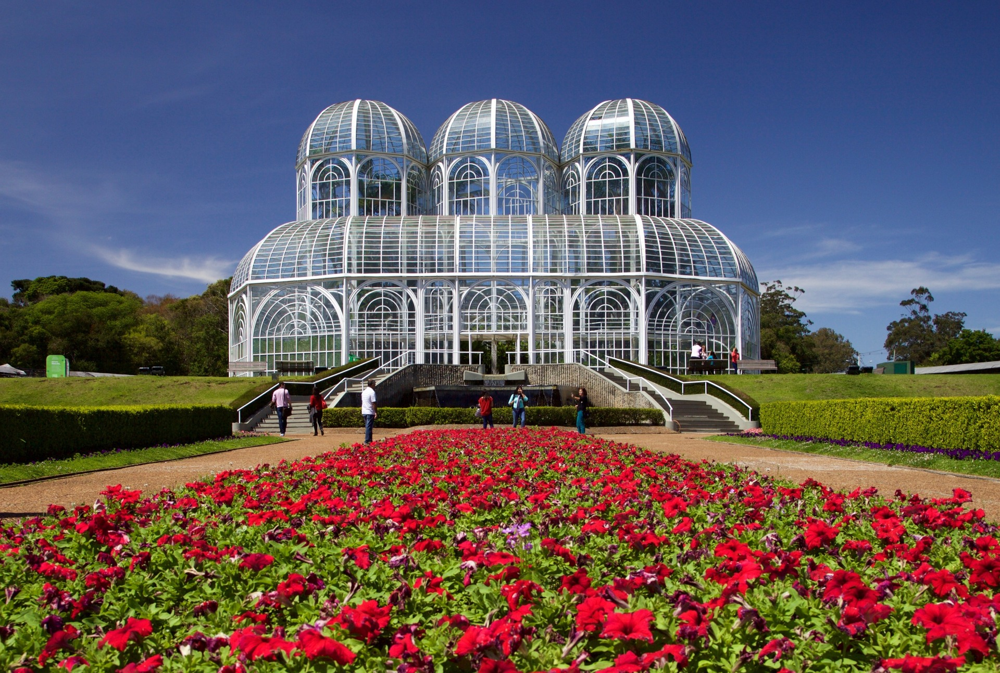

Curitiba é uma cidade rica em cultura e história, com vários pontos turísticos interessantes para visitar. A seguir são apresentados dois desses pontos:

Inaugurado em 1991, o Jardim Botânico de Curitiba é considerado um dos principais cartões postais da cidade e um dos jardins botânicos mais visitados do Brasil.
O jardim é conhecido por seu design inovador, que apresenta uma estufa em estilo art nouveau com três abóbadas de vidro e ferro inspiradas no Palácio de Cristal de Londres. A estufa abriga uma variedade de espécies vegetais nativas do Brasil, bem como de outros países.
jardim também conta com diversas trilhas e caminhos para caminhadas, além de uma grande área verde com gramados, flores e jardins temáticos. Há também um espaço para exposições, um museu botânico e um teatro ao ar livre, onde são realizados eventos culturais e apresentações artísticas.
Uma das atrações mais populares do jardim é a "Fonte das Cerejeiras", um conjunto de 30 cerejeiras doadas pelo governo japonês que florescem no início da primavera, criando um espetáculo de cores e aromas.
O Jardim Botânico de Curitiba é um local muito apreciado pelos moradores locais e turistas, oferecendo uma experiência agradável e educativa para todas as idades.
Para mais informações, visite o site oficial do Jardim Botânico de Curitiba.